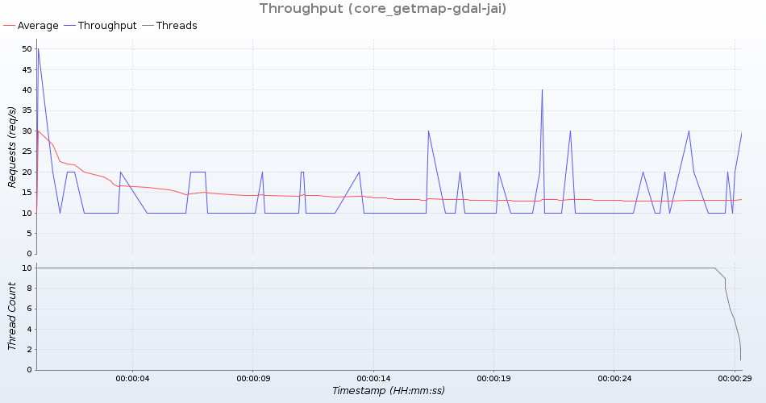

Group: core-gdal-jai
Summary
| General | |
|---|---|
| Time | 20180625T235319+0000 - 20180625T235349+0000 |
| Duration in seconds | 30 |
| Number of requests | 1129 |
| Requests per second | 37 |
| Response duration (ms) | |
| Min | 6 |
| Average | 263 |
| Max | 8349 |
| Standard deviation | 675 |
| Response duration quantiles (ms) | |
| 10% | 28 |
| 20% | 39 |
| 30% | 46 |
| 40% | 55 |
| 50% | 63 |
| 60% | 76 |
| 70% | 93 |
| 80% | 128 |
| 90% | 454 |
| 99% | 2463 |
| 99.9% | 5358 |
| 100% (max. value) | 8349 |
| Response size (bytes) | |
| Total | 26520529 |
| Min | 493 |
| Average | 23490 |
| Max | 92181 |
| Standard deviation | 23553 |
| Status codes | |
| 200 | 1129 (100%) |

Detailed response information
Group: core_getmap-gdal-jai
Summary
| General | |
|---|---|
| Time | 20180625T235355+0000 - 20180625T235419+0000 |
| Duration in seconds | 30 |
| Number of requests | 133 |
| Requests per second | 4 |
| Response duration (ms) | |
| Min | 228 |
| Average | 2282 |
| Max | 12898 |
| Standard deviation | 2499 |
| Response duration quantiles (ms) | |
| 10% | 448 |
| 20% | 717 |
| 30% | 919 |
| 40% | 1220 |
| 50% | 1399 |
| 60% | 1709 |
| 70% | 2145 |
| 80% | 2619 |
| 90% | 6886 |
| 99% | 12120 |
| 99.9% | 12660 |
| 100% (max. value) | 12898 |
| Response size (bytes) | |
| Total | 57922425 |
| Min | 2310 |
| Average | 435506 |
| Max | 1180973 |
| Standard deviation | 358469 |
| Status codes | |
| 200 | 133 (100%) |

Detailed response information
Group: gdal_getmap-gdal-jai
Summary
| General | |
|---|---|
| Time | 20180625T235431+0000 - 20180625T235501+0000 |
| Duration in seconds | 30 |
| Number of requests | 245 |
| Requests per second | 8 |
| Response duration (ms) | |
| Min | 72 |
| Average | 1243 |
| Max | 2931 |
| Standard deviation | 848 |
| Response duration quantiles (ms) | |
| 10% | 156 |
| 20% | 191 |
| 30% | 231 |
| 40% | 1275 |
| 50% | 1425 |
| 60% | 1557 |
| 70% | 1757 |
| 80% | 1953 |
| 90% | 2396 |
| 99% | 2751 |
| 99.9% | 2857 |
| 100% (max. value) | 2931 |
| Response size (bytes) | |
| Total | 85324857 |
| Min | 2305 |
| Average | 348264 |
| Max | 885967 |
| Standard deviation | 340450 |
| Status codes | |
| 200 | 245 (100%) |